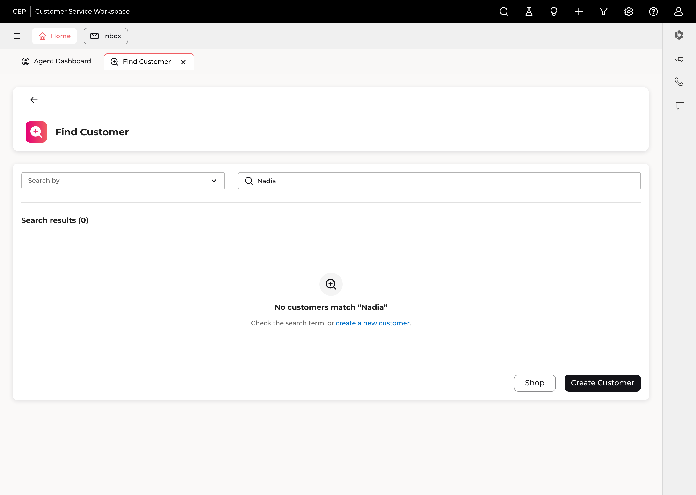
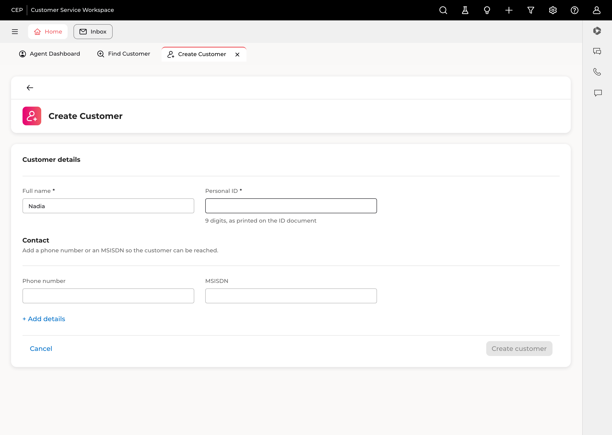
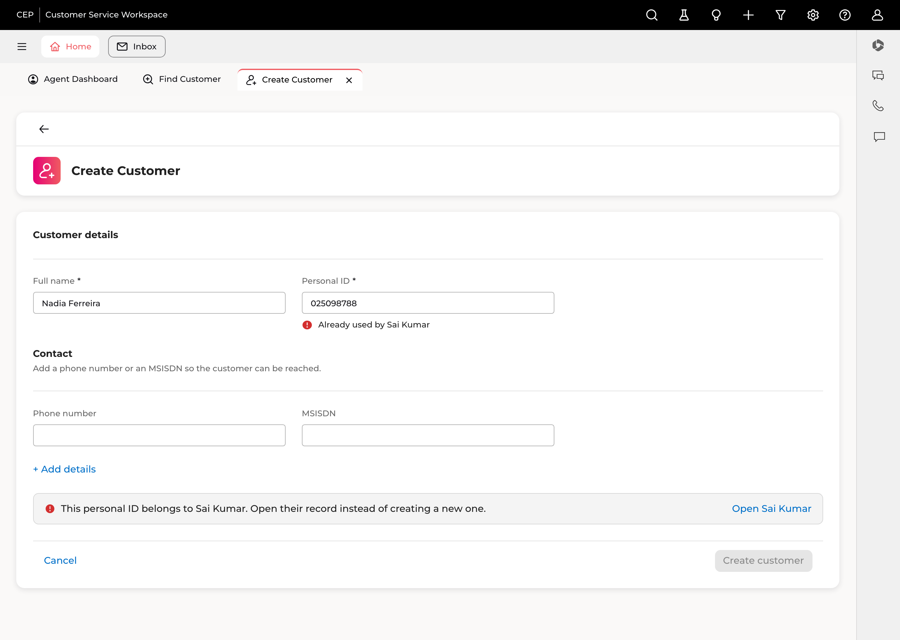
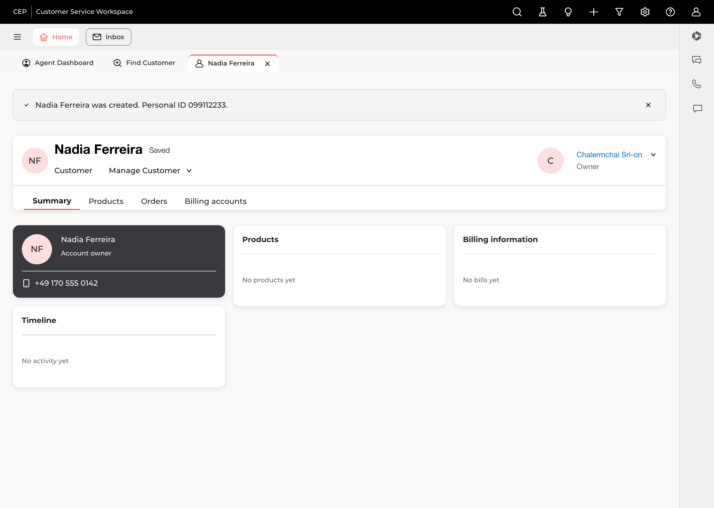

Stage 04 · /senior-product-designer
Then it got built
In this project the repo is the design surface — the app is a 1:1 clone of the Figma file. So the deliverable isn't a mockup, it's working code that passes the same tests as everything else in the workspace.
The gate · four screens · three bugs a spec can't catch · the numbers
Before a single line
Load the context, size the job, gate every element
Layer 1 · non-negotiable
Read DESIGN_CONTEXT.md
Load the product's real context and print what was loaded, with its age — so a stale map is visible rather than silently trusted.
Triage
This came in as Flow tier
Four surfaces touched, not one component. Tweak-tier would have skipped delegation; Flow runs the full pipeline.
Layer 2 · the gate
Five categories, re-verified
REUSE → COMPOSE → EXTEND → INVENT → PLACEHOLDER. The PM's tags from stage 03 were re-checked, not trusted — the rule is to re-verify the inventory before declaring anything new.
An emoji or an ad-hoc SVG standing in for a real icon counts as PLACEHOLDER and must be tagged. That single rule is why the icon got recoloured properly instead of faked.
The gate · result
Four new files. Nothing invented.
DeliveryCard's input idiom + the error-alert icon already used beside neutral text at BillingColumn.tsx:68
DeliveryCard.tsx:119's bordered callout + the same alert icon + an existing IconButton
person-avatar-add.svg, recoloured white — the gradient tile needs a white icon
Plus two one-line fixes that made folk's pattern possible at all: SearchCustomerCard
stops discarding the typed term, and ResultsCard finally passes onSubmit through.
The screens · 01 · the moment that didn't exist
Search finds nobody

Then: Check the search term, or create a new customer. folk's pattern, in our components.
Before this stage the field did nothing and the table always showed all ten mock customers. The entry point to the whole feature had to be built before the feature could be reached.
components/find-customer/NoResults.tsx new
components/find-customer/ResultsCard.tsx filters now
The screens · 02 · the create form
Opens with the name already in it

"Create Customer" sits beside Agent Dashboard and Find Customer. Take another call and come back — the half-filled form is still there. That's the argument that beat the modal.
"Nadia" carried over from the failed search, and focus lands on the first empty required field — Personal ID, not the top of the form.
Name, Personal ID, and one of Phone / MSISDN. Everything else hides behind + Add details. The primary action stays disabled until it can succeed.
app/create-customer/page.tsx · components/create-customer/CreateCustomerCard.tsx
The screens · 03 · the state no reference showed us
This ID belongs to someone

With an Open Sai Kumar action. Navan's intent — warn and offer the existing record — built from our own components.
The form stays filled, the field carries its own error (Already used by Sai Kumar), and the primary action is disabled rather than failing on click.
A duplicate customer becomes someone else's billing ticket next week. This is the most expensive mistake on the screen, so it gets the most design.
components/ui/DuplicateMatchBanner.tsx · lib/created-customers.ts
The screens · 04 · the success moment
Land on the record, not a dead end

"Create Customer" becomes "Nadia Ferreira". The agent is now on the customer they just made and can keep working the call.
Dismissible — a permanent success message becomes furniture by the fortieth call.
No products, no bills, no activity. One line per card — No products yet — because the alternative is three cards that look broken. This was Risk 1 in the PRD, named before it was hit.
app/customers/new/page.tsx · components/customer/CreatedCustomerView.tsx
The part no spec would have caught
Three bugs that only exist once it runs
01 · focus
Autofocus landed on the wrong field
"Focus the first empty required field" was implemented with :placeholder-shown — and Full name has no placeholder, so it never matched.
Why a spec can't catch it: the CSS selector that looks like it means "empty" quietly depends on a property the design never gave that field.
02 · duplicate keys
ContactCard threw on the new customer
It keys contact rows by their text. All ten mock customers have every contact field filled, so two empty strings had never collided before.
Why a spec can't catch it: a new customer is the first record in this product's history with partial data. The empty state broke a component that already ships.
03 · stale tooling
Both servers were lying
Storybook kept reporting 44 stories and the dev server 404'd the new routes — both were long-running processes serving an older truth.
Why it matters: verification that trusts a process someone left running isn't verification. Fixed by building Storybook fresh and testing that.
Two things also got added that the PRD never asked for, straight off the quality checklist: a visible focus ring on inputs (this screen is keyboard-driven and there wasn't one), and a dismiss button on the confirmation.
Verification · all re-run at the end
The numbers, and the one thing they missed
~20 of them new
up from 44
npm run build
every state
The build output also proved the 404 fix: /customers/new comes out
○ Static while /customers/[id] still prerenders its ten mock paths.
Confirmed in the output, not assumed.
And the thing the tests missed. The first duplicate screenshot was captured with a dashed ID, so format validation fired and what appeared was the name-match warning — labelled as the ID block. Two different states, wrong caption. The test suite was green either way. Looking at the image is what caught it.
Stage 04 · takeaway
Specs are checked by reading. Designs are checked by looking.
The gate held — four new files, zero new tokens, nothing invented. But the build still found three things the spec couldn't: a focus selector that depended on a property the design never gave, a shipping component that had never met a record with empty fields, and two stale servers cheerfully reporting the old truth.